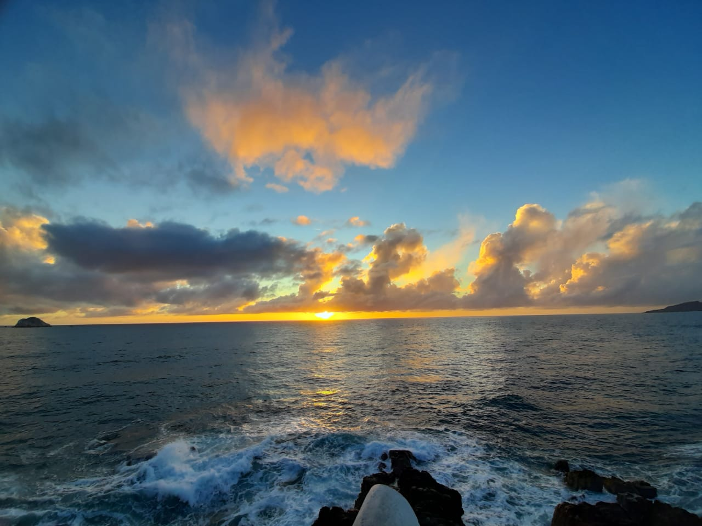
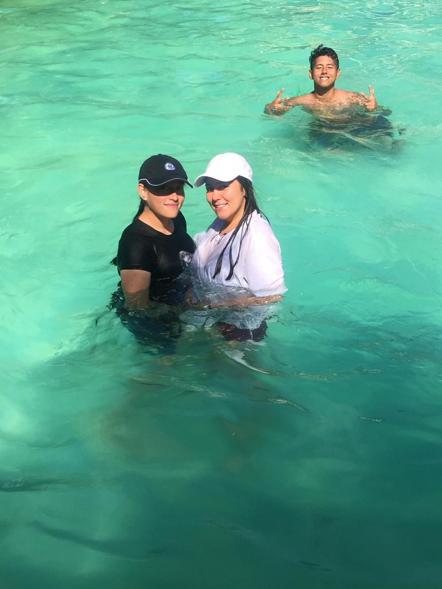
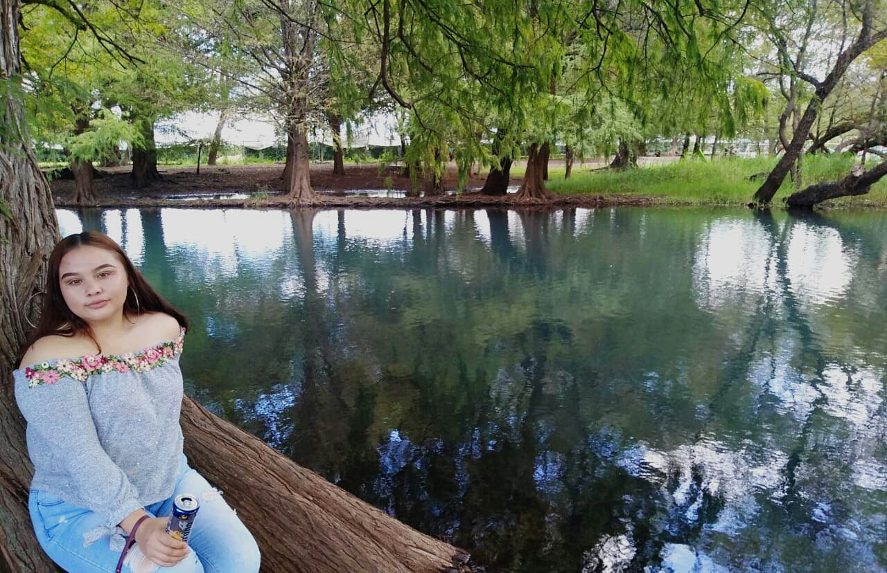

Mi primera visita al mar, yo diría que no pudo haber sido un lugar mejor para conocerlo que en la Perla del Pacífico, Mazatlán Sinaloa con su trancito de pulmonías toda la noche y sus mapaches en cada esquina por las noches. Aunque no estube mucho tiempo ahí, pude apresiar lo amable y bondadosa que es su gente... Sin duda alguna es un lugar magico donde cada amanecer te hace olvidarte por un momento de todos tus problemas. Espero algún día volver ahí con mi familia y amigos.
Salida a las albercas de la ciudad de San Martín, "LAS PENGUAS", fue uno de los mejores días que pasé con mis compañeros de clase... Pasarón muchas cosas ese día que preferiría no recordar. Pero aún así, voy a extrañar a estas gentes. #LosTKM.
Una de las veces que más me gustó visitar el lago de Camécuaro fue cuando fui con mi hermana Edith, esos días son de los mejor para ambos... Sin duda creo que no hace falta salir del estado para pasarla bien en un buen lugar.
